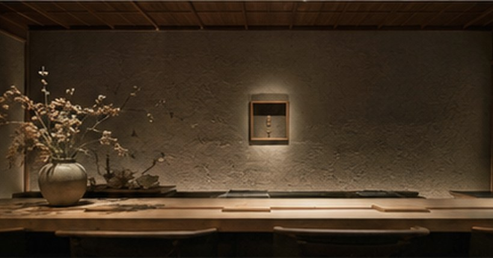
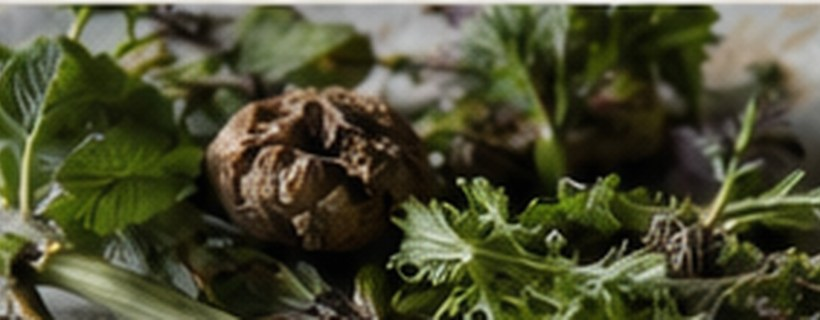

Food as cultural geography
餐廳不是附屬安排，而是旅程的核心文本。 本頁以公開讀者為對象，採白話體文，不使用對話式語氣。資料以店方官方介紹、官方預約頁與官方社群為優先；其次參考 Michelin Guide、Tabelog、一休、OMAKASE、Pocket Concierge、地方媒體、旅遊媒體與可靠食評。未能核實的內容不寫成確定事實，而改列為考證備註。

餐桌、器物與空間 
山野食材與季節 osaka / food
大阪 商都的胃，在北區、福島、針中野與天滿之間展開。
大阪常被簡化為道頓堀、章魚燒與串炸；本行程改由西天滿、北新地、福島、島之內、曾根崎、京橋與針中野進入城市。這些地區組成的不是觀光大阪，而是商業、酒、食材、交通與生活圈交錯的大阪。
十皿（Tosara） 十皿最值得書寫的地方，不只在星級或評分，而在「淡路島食材」這條線。淡路島位於瀨戶內海東端，面向大阪灣、播磨灘與紀伊水道，既是海島，也是大阪食材圈的一部分。淡路洋蔥、魚介、畜產與乳製品經由大阪的都市餐桌重新編排，形成一種商都式的地方料理：地方性不是留在產地，而是在城市中被翻譯。
淡路島亦有深厚的文化背景。日本神話中的「国生み」把淡路視為最早誕生的島之一；古代「御食国（みけつくに）」概念則指向向朝廷供應食材的地方。這些敘事未必直接出現在菜單上，但有助理解十皿的開場意義：第一餐不只是抵達大阪，而是看大阪如何把周邊島嶼、海域與農產納入自己的飲食系統。
十皿安排在抵達日午餐，節奏準確。早機後不宜立即進入沉重晚宴；西天滿的位置又能自然銜接中之島、堂島與北新地。從餐桌上的淡路島，走到堂島川與土佐堀川之間的水都大阪，行程一開始便建立了「食材—市場—城市」的主題。
餐桌讀法： 留意淡路島食材如何被處理成都市料理，而不是被展示成產地標籤。這餐的重點在翻譯能力。
資料： 資料待補：官方網站／預約頁
WINE食堂 緒乃 WINE食堂 緒乃比一般 wine dining 多了一條人物與食材線。店方介紹指出，它由北新地日本料理店「緒乃」製作，使用緒乃店主小野孝太故鄉淡路島為中心的嚴選食材；常見洋食菜式經由片山主廚處理後，以 course 形式呈現，並由侍酒師以多款 by-the-glass wine 提供配搭。
這種設定很適合抵達大阪第一晚。午餐已由十皿讀淡路島，晚餐再由 WINE食堂 緒乃把同一個產地軸線放進北新地夜晚，形成不重複的延續。十皿較像精緻日本料理的都市翻譯；WINE食堂 緒乃則以洋食、葡萄酒與北新地空氣，展示同一片島嶼食材在大阪夜裡的另一種表情。
「緒乃」本店預約困難，WINE食堂 緒乃可視為一個較有彈性的入口。它不應被看成簡化版，而應看成緒乃系統如何把食材、酒與城市餐酒文化分流到另一種日常可進入的形態。
餐桌讀法： 重點是淡路島食材如何通過洋食語法與 by-the-glass wine 變成北新地的一晚。第一晚不求最重，而求城市開始呼吸。
資料： 資料來源：店方介紹摘要（待補原文連結）
継みき 継みき的意義，不在於「又一間北新地午餐」，而在於它與十皿之間的人物脈絡。它由曾在十皿工作、學習並共事的女性料理人自立開業；若以十皿作為 6/19 的開場，継みき便可讀成料理人從前店系譜中走出來、建立自己店名的一章。
店名中的「継」有承接、延續與再編輯的意味。這不是只屬於料理技巧的字，而是一個關於職人如何處理過去的字。承繼若太重，店會失去個性；自立若太急，又會變成斷裂。継みき的閱讀重點，正是看它如何在前店記憶與個人聲音之間取得比例。
把継みき安排在第二天午餐，也令大阪段形成漂亮對照。第一天十皿以淡路島食材開場；第二天継みき轉入料理人的個人路徑；晚上再到針中野吃上田商店，整天由北區精緻餐桌轉向生活圈燒肉與小酒場。
餐桌讀法： 觀察它與十皿的相似與分歧。若能在食材處理、節奏、器物或服務中感到獨立性，這餐便不只是行程中的一個訂位。
資料： 資料來源：店史線索（待補官方／訪問連結）；公開上線前宜補官方／訪問連結
04
6/20 晚餐｜針中野｜介紹制與地元生活圈
針中野 燒肉・ジビエ 介紹制 本店
上田商店針中野本店 針中野一晚，是大阪段的重要轉向。大阪的旅遊敘事常把梅田、心齋橋、難波放在中心，但城市真正的肉感，往往藏在私鐵與地下鐵沿線的住宅區、商店街、燒肉店與小酒場。上田商店本店讓行程離開觀光核心，進入地元生活圈。
現有資料將上田商店描述為「電話番号非公開」「完全紹介制」的ジビエ料理店，亦提到過去難以預約。這類店的價值不只在菜式，也在進店門檻、熟客網絡、客層與店內節奏。它不是用來證明大阪有高級餐，而是讓大阪段出現一種較難被旅遊媒體複製的生活圈質感。
針中野不是為了取代北新地，而是展示大阪另一種密度：不精緻、不包裝，但有城市日常的重量。這種一晚，能防止大阪段變成只在「好店」之間移動。
餐桌讀法： 飯後若要小飲，最合理是留在針中野周邊；跨區追名店，反而削弱這晚的地方感。
資料： 參考連結：osaka-gourmet01.com/2022/03/25/28380
島之内フジマル醸造所 島之内フジマル醸造所的重點在「都市中的酒」。葡萄酒常被理解成遠方產地的產品，但都市釀造所把釀造、飲用與街區重新拉近。島之內靠近心齋橋、長堀與道頓堀邊緣，混雜、密集、略帶邊界感，正好承載 urban winery 的概念。
這餐把大阪從「食」推向「酒」。日本葡萄酒近年不再只是好奇心項目，而是逐漸形成自己的飲食語境。若餐中能遇上大阪、關西或西日本產酒，值得把它視為地方文化的一部分，而非只按歐洲酒標準比較。
餐桌讀法： 看日本葡萄酒如何配合城市型菜式。這裡不必追大牌酒，應看酒如何成為大阪日常飲食的一種語言。
資料： 資料待補：官方網站／官方社群
鳥刺し酒場 スタンドくーま君 鳥刺し酒場 スタンドくーま君不是普通立飲店，而是「熊の焼鳥」系統在曾根崎・お初天神通り開出的鳥刺し專門新業態。店方開店資料寫明，它由株式会社熊のマネージメント營運，2025 年 10 月 1 日開業，最大特徵是「焼鳥を一切置かず」，把焦點集中在鳥刺し與タタキ。這一點很重要：它不是用燒鳥名店招牌賣普通串燒，而是把熊の焼鳥本店最具辨識度的生食技術拆出來，轉化成較短、較輕、較容易進入的酒場形式。
核心食材是「薩摩極み刺し鶏」。店方資料說，這是與鹿兒島養鶏家共同開發的鳥刺し專用雞，承接熊の焼鳥使用的雞種脈絡，長期平飼い至大型化，主打腿肉的彈力與胸肉的細滑。最應優先理解的菜不是花巧小食，而是兩個名物：とろモモタタキ 與絹ムネ刺し 。前者看腿肉的脂、汁與咬感；後者看胸肉是否能做到細滑而不乾。若想再比較，可加親鶏もも刺し、生肝或手羽系部位；最後才考慮くーま君のたまおにぎり這類帶玩味的收尾。
店內語氣應該讀成「高級技術的大眾化」，不是正式餐廳。紅色吧台、音樂、立飲感和帶一點玩笑的菜名，都是它有意做出的年輕化酒場語言。它適合放在 17:00，作為島之內フジマル醸造所之後、天滿小酒場之前的一個短飲位。這裡負責把下午轉入夜晚，不負責完成整晚；若在這裡食太滿，後面的天滿與炭火いわ田會失去節奏。
食安上要寫得準確。鳥刺し與鶏タタキ屬生或半生雞肉料理；即使店方供應鏈和處理方法較有系統，也不等於官方保證零風險。大阪市與厚生労働省均提醒，生或加熱不足的雞肉可引起カンピロバクター食中毒。較穩妥的讀法是：這是一間把鳥刺し風險管理做成專門技術的店，而不是「生雞肉必然安全」的店。體調不好、腸胃敏感或不想承擔生食風險時，應避開生／半生部位，改點加熱小食。
餐桌讀法： 點菜宜克制。建議以小份とろモモタタキ、絹ムネ刺し作核心，再加一款親鶏或肝系部位；飲一至兩杯便轉場。這裡的價值在於用短時間讀到大阪酒場的另一面：不是串炸、不是燒鳥，而是把會員制燒鳥名店的鳥刺し技術壓縮成一段站著喝的夜。
資料： 官方店舖列表：kuma-yakitori.com/shop_list.html ；開店資料：PRでっせ ；訪問／業態介紹：Food Stadium Kansai ；食安參考：大阪市 、厚生労働省
炭火いわ田 炭火いわ田把 6/21 的夜由酒場速度轉入火候。炭火料理表面直接，其實最考驗控制：火不能弱，香不能燥，油脂不能膩，鹽與酒的比例也不能失衡。這種店若做得好，能用火和煙把一晚壓實。
京橋／都島方向與梅田、天滿、北新地不同，更有生活區與交通節點的粗實感。若這晚再回北新地，城市層次會重複；移向京橋方向，反而能看到大阪夜的另一面。
餐桌讀法： 看炭香是否有深度而不只是焦香。若酒、火、油脂之間能保持張力，這就是一間炭火店值得特地排入行程的原因。
資料： 資料待補：官方網站／官方社群
08
6/22 早午餐｜福島｜土鍋ご飯與轉場餐
土鍋飯 福島 和食御膳 米
一粒一粒 一粒一粒的核心很清楚：土鍋飯。店方介紹強調現炊土鍋ご飯，早上以銀シャリ配八種小鉢，晚上則以季節食材與出汁炊飯，並讓食客享受米本身的甘味與鍋巴香氣。這種設定非常適合作為離開大阪前的一餐。
福島是大阪近年最值得細讀的飲食區之一。它離梅田很近，但不像梅田那樣被商業設施完全定義；小店、酒場、洋食、割烹與晚餐店密度高，形成一種「近中心而不附屬中心」的成熟感。一粒一粒作為大阪最後一餐，讓旅程在離開大阪前有一個安定的收束。
這天之後要轉往富山，早午餐的功能是穩定身體與時間。它不需要製造高潮，也不應吃得過重。好的轉場餐，價值在於讓下一段旅程順利開始。
餐桌讀法： 看米、湯、菜與簡單料理如何建立安定感。由大阪轉入富山前，這餐應該乾淨、清楚、留有餘地。
資料： 官方連結：hitotsubu-hitotsubu-fukushima.owst.jp/
toyama / food
富山・高岡・南砺・利賀 食材不是形容詞，而是地理本身。
富山段的主題，是把山與海之間的距離吃出來。富山灣急深，立山連峰帶來水與雪，岩瀬保留北前船港町記憶，高岡把金工與器物帶上餐桌，南砺與利賀則把餐廳推入山村。
09
6/22 晚餐｜富山市｜抵達北陸後的第一餐
富山 懷石 日本料理 地物
冨久屋 富山第一晚不需要立即衝向最高規格。剛從大阪抵達，身體需要的是轉換節奏：由大阪的都市密度，轉入北陸的魚、米、水、酒與季節。冨久屋在行程中的角色，是讓味覺先校準到富山。
現有資料提到，冨久屋店主大屋丈二曾在東京西麻布懷石料理工作，2015 年開店，以簡潔料理展示富山多樣食材魅力；亦提到 Gault & Millau 15.5/20 的評價。這些資料若公開發表，仍宜補充 Gault & Millau 原頁或店方訪問；但作為餐桌讀法，它已清楚說明冨久屋不是單純「地方晚餐」，而是一間以富山食材為主角的細緻店。
這類第一晚晚餐最怕用力過度。若一抵達便安排過於正式的長餐，容易讓富山段一開始就失去呼吸。冨久屋更適合作為入口：讓地方味覺先出現，但把高潮留給後面的岩瀬、高岡、南砺與 L’evo。
餐桌讀法： 留意是否有富山灣魚介、昆布締め、白えび、地酒與季節菜。重點不是追齊名物，而是看「當日的富山」如何被端上桌。
資料： 資料來源：Gault & Millau 與食評摘要整理；公開上線前宜補原始連結
10
6/23 午餐｜岩瀬方向｜港町散步中的意大利語法
岩瀬 北前船 意大利料理 富山食材
Piatto Suzuki Cinque（ピアット スズキ チンクエ） Piatto Suzuki Cinque 的官網概念非常適合岩瀬行程。店方介紹指出，餐廳位於保留北前船港町風貌的富山市岩瀬區，使用富山豐富食材，並準備能配合料理的本地酒，讓食客以本格意大利料理享受富山的惠澤。
岩瀬不只是海邊小區，而是北前船航路中的重要港町之一。北前船連接北海道、日本海沿岸、北陸、瀨戶內與大阪，運送昆布、米、酒、木材與各種商品，也運送資本、飲食習慣與審美。把午餐放在岩瀬方向，能把港町散步與餐桌放在同一條線上。
第三方介紹亦指出，鈴木吾郎主廚重視富山食材，直接使用早晨漁獲與新鮮蔬菜，菜式可配 wine 與地酒，店內外亦展示岩村遠（Iwamura En）的陶藝。這一點很重要：Piatto Suzuki Cinque 不只是「富山有意大利菜」，而是港町、漁獲、地酒與器物共同構成的餐桌。
餐桌讀法： 看魚介如何從日式語境轉到意式語境。這餐不是為了證明富山有西餐，而是看港町與外來料理語言如何共存。
資料： 官方連結：p-suzuki5.com/concept/ ｜參考：2024.goforkogei.com/en/tour/recommend/1448/ ｜en.z-mile.com/gourmet/piatto-suzuki-cinque/
11
6/23 晚餐｜富山市｜Destination Restaurant 的富山意大利料理
富山 意大利料理 Destination Restaurant 田中穂積
ひまわり食堂2 ひまわり食堂2不應被名字誤導成普通食堂。現有資料引述 Japan Times Sustainable Magazine，指田中穂積主廚在富山市提供獨自的意大利料理，並使ひまわり食堂2成為 2025 年「The Destination Restaurant of the Year」。這代表它的行程角色應被重新定位：它不是補空檔，而是富山市內的重要晚餐。
6/23 白天若走富山市與岩瀬，晚餐回到市區很合理。富山的意大利料理特別有意思，因為富山灣魚介、立山水、米、蔬菜、發酵與地方酒都能進入非日式語法。這與午餐 Piatto Suzuki Cinque 形成比較：一間在岩瀬港町，一間在富山市內；一日之內可看富山食材被兩種意大利料理方式處理。
餐桌讀法： 不要用「食堂」兩字降低期待。重點是富山食材如何在意大利料理中呈現地方性，而不是只看是否有高級感。
資料： 參考連結：sustainable.japantimes.com/jp/magazine/501
AhoraAqui（アオラキ / AhoraAqui） AhoraAqui 應與高岡一起閱讀。官網概念寫得非常清楚：「公邸料理人 × 風土＝新たに生まれる一皿」。它把曾在海外日本大使館傳遞日本料理的公邸料理人經驗，與日本各地風土帶來的食材與文化相遇，轉化成原創料理。
人物線也很重要。オーナーシェフ大角公彦的根在輪島，曾任海外日本大使館公邸料理人；他重視不過度加工，活用旬材本身。料理長横田啓介則在日本學習法餐基礎，赴法研修並取得 Bib Gourmand 後回到富山。這組合使 AhoraAqui 不是簡單和洋折衷，而是「和食的克制」與「法餐的構成」在高岡相遇。
建築背景進一步加深了這餐。餐廳所在的佐野家住宅主屋，是明治 33 年高岡大火後建成的土蔵造り建築，具高防火壁，並在土蔵造り中積極引入洋風意匠。把午餐放在這樣的空間內，等於把高岡的防火城市史、町家建築與現代料理放到同一張桌上。
高岡不是富山市的附屬，它有前田利長、瑞龍寺、城下町遺構、金屋町、山町筋、銅器與漆器所累積出的城市性。午餐安排在 AhoraAqui，能讓高岡日不只停在懷舊，而是看到傳統城市如何生成當代餐桌。
餐桌讀法： 留意器皿、金工、空間與菜式是否形成高岡感。高岡最值得看的，往往不只是吃甚麼，而是用甚麼器物承載。
資料： 官方連結：www.ahoraaqui-takaoka.com/concept.html
13
6/24 晚餐｜高岡｜和香奈之後的完全體
高岡 壽司 日本料理 富山前 古民家
柳緑 柳緑是高岡日的關鍵。現有資料指出，高岡名店「和香奈」於 2025 年 8 月底結束舊址營業，9 月初遷至定塚町並改名「柳緑」。這不是一般搬店，而是舊舖如何在現代親方手中完成一次再編輯。
舊店和香奈本為有五十多年歷史的家族老店；現任親方領毛龍生據稱在 27 歲時因上一代病倒而臨危接手，之後靠自學與鑽研，把傳統壽司店推成主打「富山前」風格的預約制名店。若這條線索再以 Hitosara 或店方訪問核實，柳緑便可寫成一個很完整的人物故事：不是繼承家業而已，而是把家業推至屬於自己的語言。
「柳緑」的名字可與禪語「柳緑花紅」相連。柳是綠，花是紅，指萬物呈現其本然面貌。這非常適合高岡壽司：不必過度炫技，而是讓富山灣海鮮、米、醋、手與器物回到最自然的位置。
新店若確為古民家改修空間，便與高岡城市主題更貼合。高岡本身就是「舊技術如何走向當代生活」的城市：由佛具、梵鐘、鑄造，到現代桌器、花器與設計品，核心一直是轉化。柳緑可視為餐飲版的高岡：不是把傳統封存，而是把它調整成今日仍令人願意坐下來的一餐。
餐桌讀法： 看舊與新的比例。菜式、酒、器、服務與店內空氣若能同時保留老店骨架與當代精準度，這便是高岡日的關鍵餐。
資料： 資料來源：Tabelog、一休、Retty、Hitosara 與禪語背景整理；公開上線前宜補原始連結
ランソレイエ（L’Ensoleiller） ランソレイエ的名字有「被陽光照耀」的意味，適合作為入山前的午餐。從富山市取車後，路線逐步離開城市，經過礪波平野、散居村與山腳，再進入南砺。這餐的價值，是把「開車去 L’evo」變成有層次的地理過渡。
富山縣官方觀光資料把ランソレイエ的主角定為地產地消：與生產者的思念一起構成菜單，使用無農藥、減農藥、自然農法與有機栽培的季節蔬菜，並配合來自冰見、新湊、能登的魚介，富山牛、豚、猪與熊等ジビエ。Bed and Craft 的介紹亦指出，オーナーシェフ高見敦司以立野ヶ原赤土孕育的有機蔬菜與自然農法蔬菜為主軸，並提及 Michelin 北陸 2021 特別版一星與 Green Star。
13:00 的午餐時間也有實際好處：早上可從容取車，午餐後再入利賀，不會把 L’evo 弄成孤立的一晚。南砺午餐像序章，晚上的利賀才是主章。
餐桌讀法： 看餐廳如何處理鄉間光線、山腳食材與法式技術。午餐宜有餘裕，不宜吃到太滿。
資料： 官方／參考連結：www.info-toyama.com/attractions/101409 ｜bedandcraft.com/meals/lensoleiller/
L’evo（レヴォ） L’evo 是富山段的核心。它之所以重要，不只是因為規格高，而是因為它把「富山」由地名變成一套味覺系統。谷口英司把餐廳放在南砺市利賀村山中，這個位置本身就是論點：不要只在城市中端出地方食材，而要讓食客進入食材形成的環境。
外部旅遊媒體曾把 L’evo 描述為山中的二星 auberge，並指出其料理使用極在地食材，包括自家農場與周邊森林採集所得。這說明它不是一般的 locavore 餐廳。locavore 只說使用本地食材；L’evo 更像建立地方語法：富山灣提供海，立山與山村提供水、山菜、野味、菌類、發酵與木的氣味，高岡與南砺的工藝又把食材放上具體器物。
自駕前往 L’evo 是正確的閱讀方式。難到達不是缺點，而是敘事的一部分。山路、天氣、森林、村落與夜晚共同形成晚餐的外部結構；食客需要離開城市，才真正明白富山不只是一個車站或海鮮市場。
餐桌讀法： 看海與山何時出現，發酵如何串場，器皿如何改變菜的重量。如果出現野菜、野味、地酒、昆布、米或發酵物，應把它們放回富山地圖中閱讀。
資料： 參考連結：www.cntraveler.com/story/toyama-japans-craft-…
すし処 鳴海 すし処 鳴海可作 L’evo 後的富山灣退場。店方地方介紹指出，店於 2016 年 10 月在新高岡站步行圈內開業，希望讓客人在高岡吃到冰見的新鮮魚介；店主每天早上親自從冰見漁港入貨，提供當日當季的握壽司與一品料理，並可配合地酒。
L’evo 後的壽司，不應被理解為另一個高峰，而應作為退場。前一晚把富山山海抽象化、詩化；翌日中午若以壽司收束，便把海味重新拉回 counter、米、醋、手與魚的直接關係。
6/26 仍有山路、天氣與山帽子入住時間等現實因素。すし処 鳴海若能順利成行，會是漂亮的富山灣收束；若當日條件不佳，改輕午餐比硬趕更合適。
餐桌讀法： 看白身、貝、蝦、季節魚與醋飯如何配合。富山灣壽司不只靠新鮮，還靠處理、熟成、鹽、醋與溫度。
資料： 參考連結：takaoka.mypl.net/shop/00000350047/
kanazawa / food
金沢 城下町秩序、港町魚市、工藝城市與當代料理人的呼吸。
金沢段的價值在於它不像第一次到金沢的行程。重點不放在兼六園、東茶屋街、近江町市場 checklist，而是由金沢港、respiracion、ENSO、赤玉與鮨木場谷去讀城市。
17
6/27 午餐｜金沢港｜入城前先看海
金沢港 立食壽司 めくみ監修 日の出大敷
立喰い鮨 優勝 很多金沢行程一入城便直奔近江町市場。本行程由山帽子退房後，先到大野からくり記念館，再到金沢港いきいき魚市吃壽司，動線更有意思。它把金沢先讀成港町，再讀成城下町。魚不是市中心憑空出現，而是來自港、市場、漁業、物流與季節。
店方介紹指出，立喰い鮨 優勝由 Michelin 二星「すし処 めくみ」山口尚享大將監修，是北陸首間立食壽司店；魚以受到料理人高度支持的能登町漁師「日の出大敷」中田洋助為中心，並向可信賴的在地漁師採購，同時發揮鮮魚仲卸業的食材選別能力。
立食或快節奏壽司，與晚上的 respiracion 形成粗與細、快與慢的對照。這種對照能讓金沢第一天更立體。
餐桌讀法： 看當日魚種與價格，不只追名物。港口壽司的重點在直接、鮮明與節奏。
資料： 官方連結：yashichi-sangyo.jp/yusho
respiracion（レスピラシオン） respiracion 這個名字已經提供了第一層讀法。西班牙語 respiración 是「呼吸」。金沢強在保存：城下町格局、茶屋街、金工、漆器、九谷、加賀料理、庭園與町家尺度仍然形成城市秩序。但一座城市若只會保存，也會變得窒息。respiracion 的魅力，是讓保存力很強的金沢產生新的呼吸方式。
店的故事亦有人物重量。幾位主廚自小相識，後來學廚、走出去，再回到金沢合作，這比獎項更能解釋餐廳的氣質。它不是孤獨天才主廚式餐廳，而是同輩之間共同經歷地方、訓練、外部視野與回歸之後的作品。當西班牙料理語法遇上北陸魚介、加賀野菜與金沢器物，重點不是「日本的西班牙菜」，而是金沢料理人如何用世界語言說自己的地方。
現有食評摘要指出，respiracion 概念完整，能把北陸金沢的山與海表達清楚，氣氛與服務分寸出色，古民家改建的餐廳格局與器皿餐具構成完整饗宴；評者尤其重視它從料理、器皿、環境到服務都圍繞料理本身展開。這種評語的價值在於，它把餐廳定位成「完整敘事」而不是單純菜式集合。
把 respiracion 放在金沢第一晚很有力。它宣告這次金沢不是重複舊景點，而是觀看一個保存力很強的城市如何生成當代聲音。它與翌日 ENSO 形成一對：respiracion 是呼吸、火與同伴；ENSO 是留白、空間與不對稱的靜。
餐桌讀法： 看三件事。西班牙語法如何處理北陸食材；器物是否把金沢工藝拉入餐桌；整餐是否真的有呼吸感，而不只是技巧堆疊。
資料： 參考連結：vocus.cc/article/688ca206fd89780001730bb4 ｜www.tastytrip.com/en/respiracion-kanazawa-japan/ ｜ishikawafood.com/en/report/2283/
Installation Table ENSO L’asymetrie du calme ENSO 不能只寫成 creative cuisine。店名已經把讀法打開：Installation Table 指餐桌也是裝置；ENSO 可聯想到禪畫中的円相，一筆畫出的圓；L’asymetrie du calme 可讀作「寂靜的不對稱」。這些詞合起來，說明它不是靠豪華、熱鬧或份量取勝，而是靠空間、留白、器物、光線、靜默與節奏建立張力。
現有英文介紹指出，ENSO 位於金沢犀川附近的一棟 house 內，自 2016 年 1 月開業，以精緻而大膽概念的菜式吸引食客；chef-owner 土井誠（Makoto Doi）曾在日本與歐洲積累經驗，於 fully open kitchen 展示技術，以北陸出色食材為靈感，並融入日本料理經驗；午晚餐均為 omakase course。
土井誠的人生路徑令 ENSO 的混合性更有根。他 1968 年生於愛知，20 歲從日本料理開始，深入研究食材、技法、器物與室內裝飾，曾在關西與關東修業；後轉向法餐，在銀座法餐店任 chef，再於瑞士、斯堪的納維亞、法國等地工作約四年，接觸當地飲食。回日本後，他選擇在金沢開店，因為此地同時具備食材、生產者、文化與空氣感。
關於原建築用途，現階段不寫成確定事實。可穩妥寫的是：ENSO 位於金沢池田町／犀川一帶，體驗重點不只在料理，也在舊城尺度、建築改修、桌面與器物之間的關係。漂亮但未核實的建築故事會削弱網站可信度，因此本文保留考證空間。
餐桌讀法： 午餐比晚餐更能看見 ENSO。日光會讓建築、器物、桌距、牆面與材質變成餐的一部分。不要只拍菜，應觀看入口、光線、聲音與上菜節奏。
資料： 資料來源：英文店鋪介紹摘要；公開上線前宜補店方／Hitosara 原頁
20
6/28 傍晚｜片町｜金沢おでん與老店日常
片町 金沢おでん 老店 酒場
赤玉 本店 赤玉本店代表金沢おでん的老店日常。おでん看似普通，其實很能反映地方：高湯、練物、麩、蘿蔔、海鮮、季節與酒客節奏，都會把一座城市的氣候與生活習慣煮出來。金沢濕冷，冬日感強，熱湯類食物自然有城市心理位置。
6/28 中午若在 ENSO 經歷抽象、留白與裝置感，傍晚回到赤玉是極好的對照。中午是寂靜、不對稱、器物與觀看；傍晚是湯氣、人聲、片町與吧台。金沢不只有工藝與靜，也有喝酒、下班、坐下吃一碗熱物的生活面。
餐桌讀法： 看湯底與客層。不要只追招牌菜，可按季節與店員建議慢慢點。早時段用餐的好處，是保留晚上的散步餘地。
資料： 資料待補：官方網站／官方社群
鮨 木場谷 鮨木場谷適合作為金沢最後正式晚餐。到這一晚，旅程已經經過大阪灣與淡路島、富山灣、岩瀬港町、高岡、利賀山中、金沢港與金沢當代料理。壽司把這些線索縮成一個高度凝縮的形式：魚、米、醋、水、手、時間。
官方繁中頁、Tabelog 與 Hitosara 可作進一步核對。現有資料指出，木場谷光洋曾在築地魚屋工作，因而打開對魚的興趣，再入調理師學校；其後在すきやばし次郎兄弟弟子相關的船橋「よしうら」修業，並在銀座「鮨 青木」磨練江戶前壽司。之後他在富山縣小矢部市以出張壽司起步，經過六年後累積人氣，2016 年於金沢開設鮨木場谷。
資料亦指出，他至今每天早上到氷見魚市場採買，並以江戶前為基礎，配合富山魚種改良自己的處理。這句話很重要：鮨木場谷不是把東京江戶前搬到金沢，而是以江戶前技術處理北陸魚。
最後一晚若再吃創作料理，容易與 respiracion 和 ENSO 重複；若吃得太隨便，又會收得弱。counter 壽司有儀式，但不需要過多解說，正好回到北陸最強的基本盤：海與手藝。
餐桌讀法： 看白身魚處理、醋飯溫度、握的密度、昆布或熟成的使用，以及金沢與富山灣魚介的差異。新鮮只是起點，處理才是壽司。
資料： 官方繁中：kibatani.com/zh-tw ｜Tabelog：tabelog.com/ishikawa/A1701/A170101/17010062/ ｜Hitosara：hitosara.com/0006101632/
bars
酒場與酒吧 作為餘白，而不是 checklist。
酒場不宜被排成任務。好的酒場經驗，往往來自偶遇、店主性格與客人密度，不一定來自名氣。
北新地 適合第一晚飯後一杯。重點是安靜、熟客感與一杯酒的完整度，不宜追求熱鬧。
天滿／裏天滿（天満・裏天満） 大阪最有酒場密度的地區之一。適合臨時起意，不宜硬排。
針中野 上田商店後最合理的續攤方向。重點不是名店，而是地元小酒場。
福島 小店、wine、站飲與二軒目選擇多。近梅田但自成街區。
十三 更粗、更生活、更下町。適合作為探索候補，不宜塞入已很滿的晚上。
金沢夜飲 金沢夜晚宜留白。若要夜飲，短飲為主，不必把城市逼成大阪式續攤。
資料策略與下一步考證 本頁已大量吸收既有店方介紹、第三方資料與食評摘要，包括 WINE食堂 緒乃、一粒一粒、Piatto Suzuki Cinque、ひまわり食堂2、AhoraAqui、柳緑、ランソレイエ、すし処 鳴海、立喰い鮨 優勝、respiracion、ENSO 與鮨木場谷。公開上線前，最值得再做的是逐店核對官方網站、官方 Instagram、預約平台與最新營業日。
考證保留：ENSO 原建築用途、柳緑搬店與改名細節、継みき人物線索，仍宜以店方或可信訪問補原始連結。現版已避免把未核實內容寫成絕對事實。